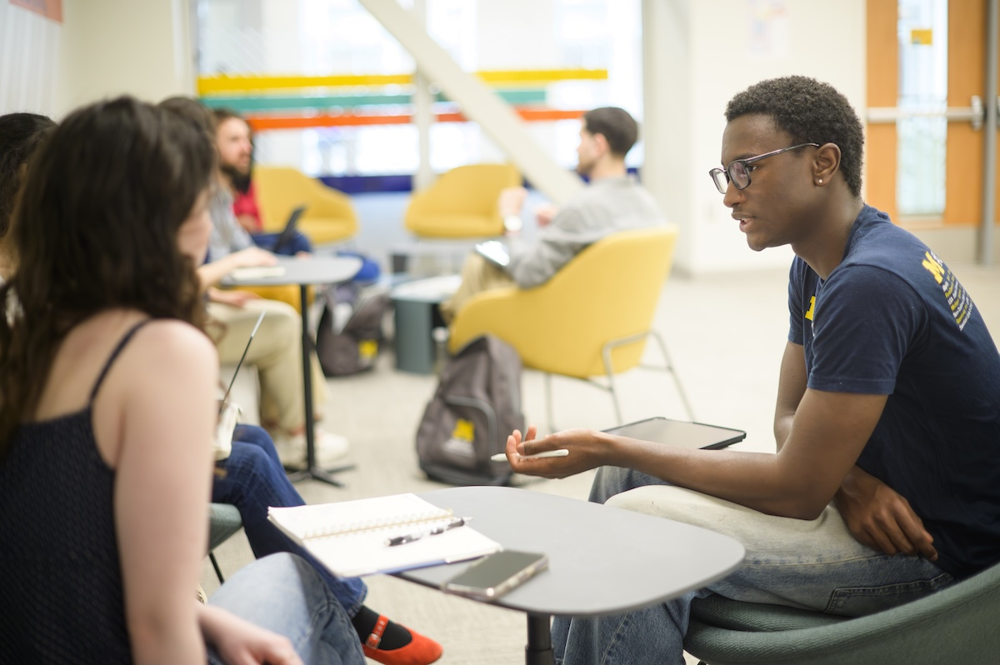

Research and Observation
Use an observation framework to organize field notes and identify important details about people and environments.

Once your engaged learning project is underway, your focus shifts from planning to carrying out the work. This stage involves conducting research, managing project responsibilities, communicating with partners, and responding to feedback.
Successful project execution requires more than completing tasks. Students should continue learning from their communities, documenting their progress, and adapting their approach as new information becomes available.

Fieldwork helps students understand the people, environments, and challenges connected to their projects. Observations and interviews can reveal needs that may not be apparent during initial project planning.
AEIOU is a framework for organizing field observations into five categories:
Organizing observations using these categories can help teams identify patterns and better understand the context of a problem.
View AEIOU Observation Worksheet (PDF)
After collecting research data, review your notes and identify recurring behaviors, challenges, and needs.
Research findings should help the team make informed decisions about the direction of the project.
Engaged learning projects often involve multiple responsibilities, deadlines, and collaborators. Keeping track of progress helps teams stay organized and recognize challenges early.
A project management worksheet can help your team break larger goals into smaller tasks, assign responsibilities, and monitor deadlines.
View Project Management Worksheet
In addition to internal task tracking, consider preparing a short project status summary for your sponsor or community partner.
A useful update can include completed work, upcoming milestones, current challenges, and decisions that require partner input.
The Ginsberg Center's Goal Setting and Planning resources can help teams connect individual activities to shared partnership goals.
Consistent communication helps maintain trust between student teams and community partners. Project updates should make it easy for everyone to understand what has been completed, what comes next, and where support is needed.
Teams should agree on communication expectations with their partners and revisit these expectations when necessary.
The Ginsberg Center's Communication Preferences resource provides guidance for establishing shared communication expectations.
Feedback is an important part of an ongoing project. Rather than waiting until the final presentation, students should regularly check whether their work continues to meet the needs of their community partner.
Henry Ford Learning Institute includes a Feedback Worksheet in its Design Thinking for Deeper Student Learning course materials. Access to individual course materials may require enrollment.
Community-engaged projects involve real people and organizations. Students should consider how their research, decisions, and deliverables may affect those involved.
The University of Michigan Ginsberg Center offers resources for managing expectations, communicating with partners, and building mutually beneficial relationships.
Use this checklist to review your team's progress throughout the project.
These resources can support your research, project management, communication, and community engagement.
Use an observation framework to organize field notes and identify important details about people and environments.
Use planning tools to track responsibilities, set goals, and communicate expectations.
Explore design thinking tools for developing ideas and gathering feedback.
Review university resources about ethical engagement, collaboration, and community partnerships.
Community Engagement: Collaborating for Change Workbook (PDF)
As your project progresses, continue evaluating your team's work and maintaining communication with your community partner. Documenting research, decisions, feedback, and challenges will also make it easier to reflect on your experience later.
The goal is not only to complete project deliverables, but also to develop professional skills and contribute to a partnership that benefits everyone involved.